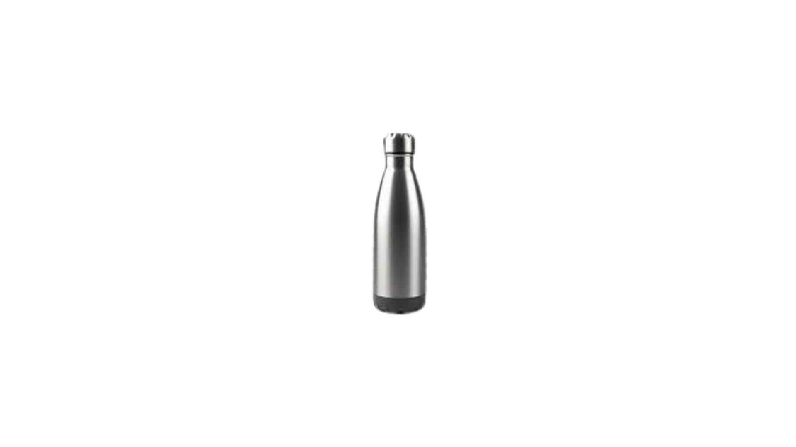
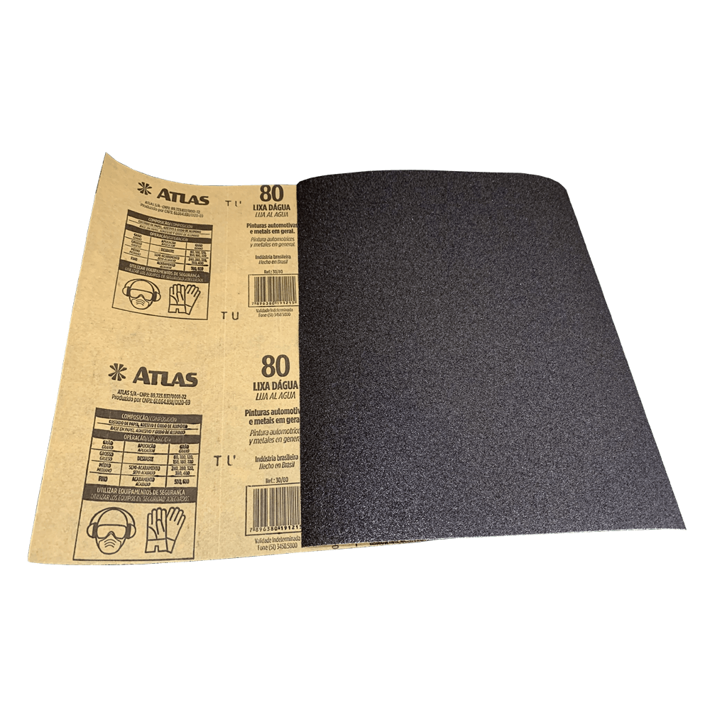
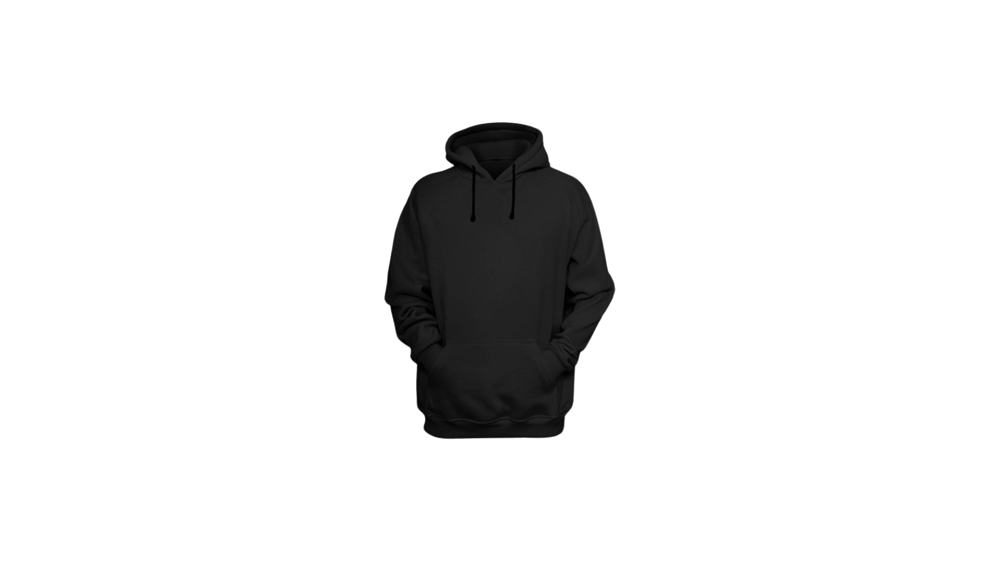
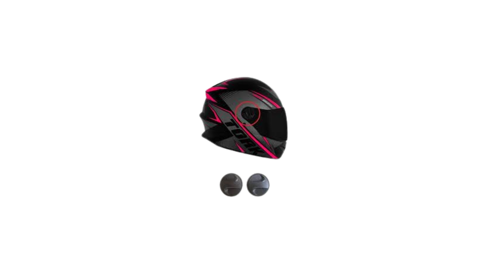
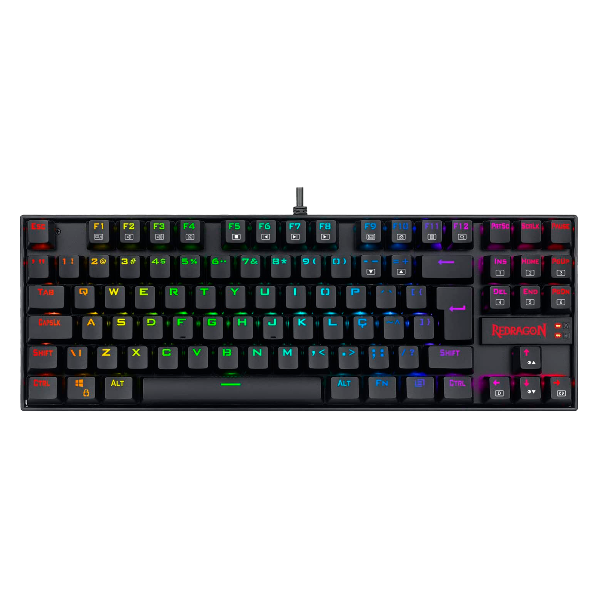

| Produtos | Descrição | Link dos Produtos |
|---|---|---|
|  |
As garrafas térmicas são recipientes isolados para armazenamento e conservação da temperatura das bebidas, sejam elas mais frias ou quentes, por mais tempo. |
|
|  |
A lixa desempenha um papel fundamental na preparação e no acabamento de superfícies, oferecendo uma solução eficaz para eliminar imperfeições, contaminantes e brilho, ao mesmo tempo que facilita a aderência entre demãos de tinta ou verniz, garantindo um acabamento ideal. |
|
|  |
O moletom é aquele parceiro para todas as horas. Ele é despojado, moderno, confortável e versátil, já que combina com diferentes estilos de calças, bermudas e até com saias. |
|
|  |
O objetivo do capacete é proteger a cabeça reduzindo os impactos causados em um eventual acidente. Além disso, as viseiras protegem os olhos e o rosto contra impactos da chuva, insetos, poeira e outros detritos. |
|
|  |
É um tipo de periférico de entrada utilizado pelo usuário para a entrada manual no sistema de dados e comandos. Possui teclas representando letras, números, símbolos e outras funções, baseado no modelo de teclado das antigas máquinas de escrever. |